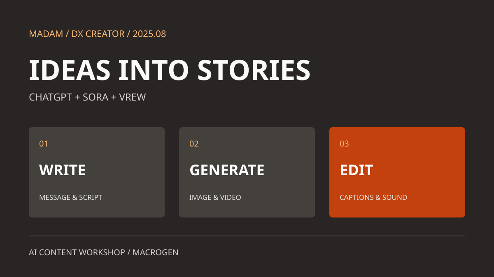

DX CREATOR / AI CONTENT / 2025
아이디어를 장면으로,
장면을 이야기로
2025년 8월 18~22일. 현장 교육에서 온라인 실습으로 이어진 ChatGPT·Sora·Vrew 활용 AI 콘텐츠 제작 과정.
전하고 싶은 메시지를 글로 정리하고, AI로 장면을 만든 뒤 Vrew에서 영상으로 엮었습니다. 기획부터 자막과 배경음악 편집까지, 콘텐츠 제작의 흐름을 경험하는 수업입니다.

기획
전하고 싶은 이야기부터 정하기
ChatGPT · 브랜드 키워드 · 시나리오
생성형 AI와 LLM의 기본을 살펴보고 ChatGPT의 기능을 실습했습니다. 브랜드 키워드를 도출하고 목표 고객과 페르소나를 정하면서, 누구에게 어떤 메시지를 전할지 구체화하는 과정입니다.
콘텐츠 시나리오 작성과 발표·피드백을 교육 내용에 담았습니다. 도구에 짧은 요청을 입력하는 것에서 나아가, 주제와 독자에 맞는 이야기의 흐름을 만드는 데 초점을 두었습니다.
이미지
글로 구상한 장면을 이미지로
Sora · 프롬프트 · 참조 이미지
이미지 생성의 기본 개념을 익히고 Sora 프롬프트를 작성했습니다. 원하는 장면을 생성하고 결과를 분석하면서 요청을 수정하는 실습으로 이어졌습니다.
참조 이미지로 장면을 수정하고 4컷 만화를 구성하는 활동도 포함했습니다. 장면마다 무엇을 보여 줄지 생각하며 텍스트 중심의 기획을 시각 자료로 옮겼습니다.
영상
Vrew에서 장면과 목소리를 연결하기
AI 영상 · 자막 · 클립 · 배경음악
Sora 영상 생성과 GPT 연동을 다룬 뒤 Vrew의 기본 조작을 익혔습니다. 개인이 정한 주제로 AI 활용 숏폼을 만들고, 긴 영상의 자막을 바꾸거나 클립과 배경음악을 추가하는 기능을 실습했습니다.
촬영 영상에 자동 자막을 생성하고 수정하는 과정도 다뤘습니다. 생성한 이미지와 영상이 하나의 이야기로 읽히도록 순서와 자막, 소리를 함께 편집하는 단계입니다.
실습 주제
일과 관심사를 콘텐츠의 출발점으로
회사 홍보 · 생활 정보 · 취미
수업 공유 자료에는 회사 홍보와 신입사원 에피소드, 직장인 점심값, 도서 추천, 운동·여행·맛집 정보처럼 다양한 주제가 남아 있습니다. 자신의 업무나 관심사에서 이야기할 거리를 골랐습니다.
이 목록은 수업에서 제안된 주제입니다. 주간 업무일지에는 온라인 숏폼 제작 강의와 심화 교육, 마지막 날의 과제 검토가 기록되어 있습니다.
THREE DAYS ONLINE
온라인 교육의 세 가지 학습 축
시간별 커리큘럼은 생성형 AI와 시나리오, 이미지 생성, 영상·Vrew 실습의 3일 구성입니다. 하루 6교시로 기획에서 제작까지 연결했습니다.
- 텍스트와 기획
- ChatGPT 활용, 브랜딩, 페르소나와 콘텐츠 시나리오
- 이미지와 장면
- Sora 프롬프트, 참조 이미지 수정과 4컷 만화
- 영상과 편집
- AI 영상 생성, Vrew 자막·클립·배경음악 편집
- 개인 주제 실습
- 주제 선정, 숏폼 제작과 과제 검토
도구를 익히며 자신의 이야기를 만들다
같은 도구를 사용해도 선택한 주제와 전하려는 메시지는 달랐습니다. 기획한 내용을 이미지와 영상으로 구체화하고 편집하는 과정을 통해, 생성형 AI를 콘텐츠 제작 업무에 적용하는 방법을 연습했습니다.
교육 기록 안내
2025년 8월 18~22일 주간 업무일지, DX 크리에이터 기초의 온라인 시간별 커리큘럼, 수업 공유 자료를 바탕으로 정리했습니다. 세부 학습 구성은 커리큘럼을 기준으로 소개했습니다.